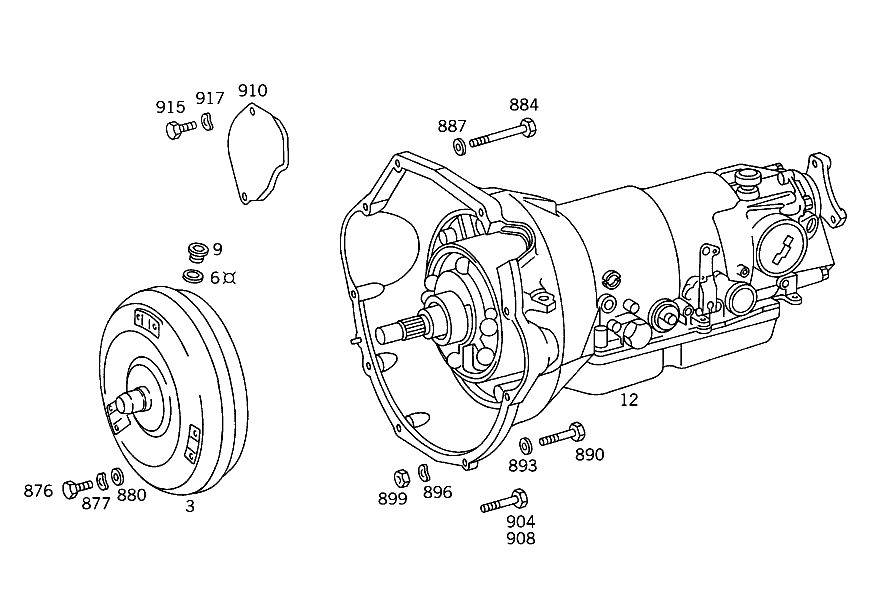

| № | Артикул | Название | Кол. | Примечание | Ограничение |
|---|---|---|---|---|---|
| 3 | A 126 250 13 02 | ПРЕОБРАЗОВАТЕЛЬ | - | ||
| 3 | A 126 250 09 02 | ПРЕОБРАЗОВАТЕЛЬ | - | ||
| 3 | A 722 250 05 02 | ПРЕОБРАЗОВАТЕЛЬ | - | ||
| 3 | A 722 250 26 02 | Гидротрансформатор | 1 | ||
| 6 | N 007603 010100 | - Уплотнительное кольцо | 1 | 10X13.5 AL | |
| 9 | N 000908 010004 | - Резьбовая пробка | - | M10X1\-10.9 | |
| 9 | N 000000 000648 | - Резьбовая пробка | 1 | ||
| 12 | A 107 270 11 01 | АКП | - | ||
| 12 | A 107 270 17 01 | Коробка передач | - | [114] СТАРЫЙ НОМЕР ДЕТАЛИ ИСПОЛЬЗОВАТЬ ДО КП 300 171183 306,307 161573 [697] ДЕТАЛЬ ПОСТАВЛЯЕТСЯ ТОЛЬКО/ИЛИ ТАКЖЕ КАК ЗАП.ЧАСТЬ | |
| 12 | A 107 270 21 01 | Коробка передач | - | [697] ДЕТАЛЬ ПОСТАВЛЯЕТСЯ ТОЛЬКО/ИЛИ ТАКЖЕ КАК ЗАП.ЧАСТЬ [429] ДЕТАЛЬ, СВЯЗАННАЯ С ПРОТИВОУГОННОЙ БЕЗОПАСНОСТЬЮ | |
| 12 | A 107 270 28 01 | Коробка передач | 1 | [697] ДЕТАЛЬ ПОСТАВЛЯЕТСЯ ТОЛЬКО/ИЛИ ТАКЖЕ КАК ЗАП.ЧАСТЬ | |
| 15 | A 126 270 00 97 | - МАСЛЯНЫЙ НАСОС | - | ||
| 15 | A 126 270 03 97 | - МАСЛЯНЫЙ НАСОС | - | ||
| 15 | A 722 270 00 97 | - МАСЛЯНЫЙ НАСОС | - | ||
| 15 | A 460 270 00 97 | - МАСЛЯНЫЙ НАСОС | - | ||
| 15 | A 126 270 05 97 | - МАСЛЯНЫЙ НАСОС | - | ||
| 15 | A 140 270 00 97 | - Масляный насос | 1 | ПЕРВИЧ.НАСОС | |
| 18 | A 004 997 27 47 | - Уплотнительное кольцо | - | ||
| 18 | A 010 997 49 47 | - УПЛОТНИТ. КОЛЬЦО | 1 | ||
| 18 | A 004 997 28 47 | - Уплотнительное кольцо | - | ||
| 18 | A 010 997 48 47 | - Уплотнительное кольцо | 1 | ||
| 18 | A 004 997 29 47 | - Уплотнительное кольцо | - | ||
| 18 | A 010 997 50 47 | - УПЛОТНИТ. КОЛЬЦО | 1 | ||
| 18 | A 010 997 47 47 | - УПЛОТНИТ. КОЛЬЦО | 1 | ||
| 18 | A 018 997 04 47 | - Уплотнительное кольцо | 1 | ||
| 21 | A 005 997 91 48 | - Уплотнительное кольцо | - | ||
| 21 | A 016 997 14 48 | - Кольцевая прокладка | 1 | ||
| 24 | A 126 277 19 14 | - ПЛАСТИНА ПРОМЕЖУТОЧНАЯ | - | [402] БОЛЬШЕ НЕ ПОСТАВЛЯЕТСЯ | |
| 27 | N 000933 008168 | - Винт | 6 | КОРПУС НАСОСА НА КРЫШКЕ | |
| 30 | N 000137 008204 | - Пружинная шайба | - | ||
| 30 | N 000137 008212 | - Пружинная шайба | 6 | КОРПУС НАСОСА НА КРЫШКЕ | |
| 33 | A 126 270 04 25 | - ПРИВОДНОЙ ВАЛ | - | ||
| 33 | A 126 270 05 25 | - Приводной вал | 1 | ||
| 36 | A 126 272 00 55 | - Уплотнительное кольцо | 1 | ПРИВОДНОЙ ВАЛ | |
| 39 | A 007 981 99 10 | - Игольчатый подшипник | 1 | ОСЕВОЙ | |
| 42 | A 126 270 04 43 | - ВОДИЛО ПЛАНЕТ. ПЕРЕДАЧИ | - | [570] FIRST EXHAUST STOCK OF OLD PARTS UP TO TRANSMISSION 894132 | |
| 42 | A 126 270 41 43 | - Водило планет. передачи | 1 | СПЕРЕДИ | |
| 43 | A 007 981 99 10 | - Игольчатый подшипник | 1 | ОСЕВОЙ | |
| 45 | A 126 272 01 73 | - предохранитель | 1 | ||
| 48 | A 126 270 11 43 | - ВОДИЛО ПЛАНЕТ. ПЕРЕДАЧИ | - | ||
| 48 | A 126 270 40 43 | - Водило планет. передачи | 1 | СЗАДИ [104] UP TO TRANSMISSION: 301,304 121873 EXCEPT FOR 106276-117005 | |
| 48 | A 126 270 17 43 | - Водило планет. передачи | 1 | СЗАДИ [105] FROM TRANSMISSION:301,304 121874 ALSO INSTALLED ON 106276-117005 | |
| 51 | A 008 981 00 10 | - Игольчатый подшипник | 1 | ||
| 54 | A 007 981 57 10 | - Игольчатый подшипник | 2 | ОСЕВОЙ | |
| 57 | A 126 272 00 07 | - Солнечная шестерня | 1 | ||
| 60 | A 126 270 24 31 | - ОБГОННАЯ МУФТА | - | ||
| 60 | A 126 270 32 31 | - ОБГОННАЯ МУФТА | - | ||
| 60 | A 126 270 40 31 | - ОБГОННАЯ МУФТА | - | ||
| 60 | A 126 270 50 31 | - Муфта свободного хода | 1 | С ОБОЙМОЙ ВНУТР. ФРИКЦ. ДИСКОВ K 2 [402] БОЛЬШЕ НЕ ПОСТАВЛЯЕТСЯ | |
| 63 | A 007 997 33 48 | - Уплотнительное кольцо | 1 | НАРУЖН. КОЛЬЦО СВОБОДН. ХОД K 2 | |
| 66 | A 126 272 15 62 | - УПОРНАЯ ШАЙБА | 1 | K 2 [402] БОЛЬШЕ НЕ ПОСТАВЛЯЕТСЯ | |
| 69 | A 126 270 00 76 | - Диск | 1 | ОБГОННАЯ МУФТА K 2 | |
| 71 | A 126 272 13 62 | - УПОРНАЯ ШАЙБА | - | ||
| 71 | A 126 272 30 62 | - Прижимная шайба | 1 | K2 | |
| 72 | A 126 270 51 28 | - Обойма фрикционных дисков | 1 | K2 | |
| 73 | A 009 997 61 48 | - УПЛОТНИТ. КОЛЬЦО | - | ||
| 73 | A 140 997 41 45 | - Уплотнительное кольцо | 1 | НАРУЖН. КОЛЬЦО СВОБОДН. ХОД | |
| 74 | A 009 997 60 48 | - Уплотнительное кольцо | 1 | НАРУЖН. КОЛЬЦО СВОБОДН. ХОД | |
| 75 | A 126 272 17 62 | - Прижимная шайба | 1 | РОЛИК ЦИЛИНДРА | |
| 76 | A 126 272 11 08 | - Приводной фланец | - | ||
| 76 | A 126 272 10 08 | - ОПОРА СОЕДИНИТЕЛЬНАЯ | 1 | ||
| 76 | A 126 272 11 08 | - Приводной фланец | 1 | ||
| 77 | A 126 272 17 52 | - Дистанционная шайба | 1 | ПО НЕОБХОДИМОСТИ 0.1 MM | |
| 77 | A 126 272 18 52 | - Дистанционная шайба | 1 | ПО НЕОБХОДИМОСТИ 0.2 MM | |
| 77 | A 126 272 19 52 | - Дистанционная шайба | 1 | ПО НЕОБХОДИМОСТИ 0.5mm | |
| 78 | A 126 272 01 73 | - предохранитель | 1 | СОЕДИНИТ. КРОНШТ. | |
| 81 | A 126 270 28 28 | - ОБОЙМА ФРИКЦ. ДИСКОВ | - | [105] FROM TRANSMISSION:301,304 121874 ALSO INSTALLED ON 106276-117005 | |
| 81 | A 126 270 80 28 | - ОБОЙМА ФРИКЦ. ДИСКОВ | - | ||
| 81 | A 126 270 07 49 | - Обойма фрикционных дисков | - | ||
| 81 | A 140 270 13 28 | - Обойма фрикционных дисков | 1 | МУФТА K 2 [105] FROM TRANSMISSION:301,304 121874 ALSO INSTALLED ON 106276-117005 | |
| 81 | A 126 270 53 28 | - ОБОЙМА ФРИКЦ. ДИСКОВ | - | [104] UP TO TRANSMISSION: 301,304 121873 EXCEPT FOR 106276-117005 | |
| 81 | A 126 270 89 28 | - ОБОЙМА ФРИКЦ. ДИСКОВ | - | ||
| 81 | A 140 270 15 28 | - Обойма фрикционных дисков | 1 | МУФТА K 2 | |
| 84 | A 008 981 38 10 | - Игольчатый подшипник | - | ||
| 84 | A 013 981 94 10 | - Игольчатый подшипник | 1 | МУФТА K 2 | |
| 87 | A 003 981 56 25 | - Шарикоподшипник | 1 | МУФТА K 2 [104] UP TO TRANSMISSION: 301,304 121873 EXCEPT FOR 106276-117005 | |
| 90 | A 126 272 07 31 | - ПОРШЕНЬ | 1 | МУФТА K 2 [402] БОЛЬШЕ НЕ ПОСТАВЛЯЕТСЯ [104] UP TO TRANSMISSION: 301,304 121873 EXCEPT FOR 106276-117005 | |
| 90 | A 126 272 00 31 | - ПОРШЕНЬ | - | ||
| 90 | A 126 272 12 31 | - Поршень | 1 | МУФТА K 2 [105] FROM TRANSMISSION:301,304 121874 ALSO INSTALLED ON 106276-117005 | |
| 93 | A 126 272 02 55 | - Уплотнительное кольцо | 1 | СНАРУЖИ | |
| 96 | A 126 272 03 92 | - Манжета | 1 | ВНУТР. | |
| 99 | A 126 993 25 02 | - ПРУЖИНА | - | ||
| 99 | A 126 993 06 03 | - ПРУЖИНА | - | ||
| 99 | A 126 993 53 01 | - ПРУЖИНА | - | [415] ПРИМЕЧ. ПО ЗАМЕНЕ ПРИМЕНИМО ТОЛЬКО ДЛЯ СТОЯЩИХ РЯДОМ ПОЗИЦИЙ | |
| 99 | A 126 993 07 03 | - пружина | 24 | МУФТА K 2 | |
| 102 | A 126 272 02 64 | - ТАРЕЛКА ПРУЖИНЫ КЛАПАНА | - | ||
| 102 | A 140 272 00 64 | - Тарелка пружины | 1 | МУФТА K 2 | |
| 105 | A 126 994 06 35 | - Пруж. стопорное кольцо | 1 | МУФТА K 2 | |
| 108 | A 126 272 03 25 | - ВНУТР. ФРИКЦ. ДИСК | - | ||
| 108 | A 126 272 07 25 | - Внутренняя пластина | 4 | МУФТА K 2 2.14 MM | |
| 111 | A 126 272 04 26 | - ФРИКЦ. ДИСК НАРУЖНЫЙ | - | ||
| 111 | A 126 272 36 26 | - Наружный диск | 1 | МУФТА K 2 3.0 MM | |
| 114 | A 126 272 06 26 | - ФРИКЦ. ДИСК НАРУЖНЫЙ | - | ||
| 114 | A 126 272 34 26 | - Наружный диск | 3 | ПО НЕОБХОДИМОСТИ 4.5 MM | |
| 114 | A 126 272 07 26 | - ФРИКЦ. ДИСК НАРУЖНЫЙ | - | ||
| 114 | A 126 272 35 26 | - Наружный диск | 3 | ПО НЕОБХОДИМОСТИ 5.0 MM | |
| 117 | A 126 272 06 26 | - ФРИКЦ. ДИСК НАРУЖНЫЙ | - | ||
| 117 | A 126 272 34 26 | - Наружный диск | 1 | ПО НЕОБХОДИМОСТИ 4.5 MM | |
| 117 | A 126 272 07 26 | - ФРИКЦ. ДИСК НАРУЖНЫЙ | - | ||
| 117 | A 126 272 35 26 | - Наружный диск | 1 | ПО НЕОБХОДИМОСТИ 5.0 MM | |
| 117 | A 126 272 08 26 | - Наружный диск | 1 | ПО НЕОБХОДИМОСТИ 5.5 MM | |
| 117 | A 126 272 06 26 | - ФРИКЦ. ДИСК НАРУЖНЫЙ | - | ||
| 117 | A 126 272 34 26 | - Наружный диск | 1 | МУФТА K 2 4.5 MM | |
| 120 | A 126 272 02 73 | - Пруж. стопорное кольцо | 1 | МУФТА K 2 2.0 MM | |
| 120 | A 126 272 02 73 | - Пруж. стопорное кольцо | 1 | ПО НЕОБХОДИМОСТИ 2.0 MM | |
| 120 | A 126 994 03 34 | - Пруж. стопорное кольцо | 1 | ПО НЕОБХОДИМОСТИ 2.5mm | |
| 120 | A 126 994 04 34 | - Пруж. стопорное кольцо | 1 | ПО НЕОБХОДИМОСТИ 3.0 MM | |
| 123 | A 126 272 18 26 | - ФРИКЦ. ДИСК НАРУЖНЫЙ | - | ||
| 123 | A 126 272 31 26 | - ФРИКЦ. ДИСК НАРУЖНЫЙ | - | ||
| 123 | A 126 272 37 26 | - ФРИКЦ. ДИСК НАРУЖНЫЙ | - | ||
| 123 | A 126 272 69 26 | - Концевая пластина | 1 | ПЕРЕДАЧА ЗАДНЕГО ХОДА 7,7 MM | |
| 126 | A 126 272 02 25 | - ВНУТР. ФРИКЦ. ДИСК | - | ||
| 126 | A 126 272 05 25 | - ВНУТР. ФРИКЦ. ДИСК | - | ||
| 126 | A 126 272 08 25 | - ВНУТР. ФРИКЦ. ДИСК | - | ||
| 126 | A 126 272 09 25 | - Внутренняя пластина | 4 | ПЕРЕДАЧА ЗАДНЕГО ХОДА 2.1 MM | |
| 129 | A 126 272 20 26 | - ФРИКЦ. ДИСК НАРУЖНЫЙ | - | ||
| 129 | A 126 272 23 26 | - ФРИКЦ. ДИСК НАРУЖНЫЙ | - | ||
| 129 | A 126 272 39 26 | - ФРИКЦ. ДИСК НАРУЖНЫЙ | - | ||
| 129 | A 126 272 67 26 | - Наружный диск | 3 | ПО НЕОБХОДИМОСТИ 2.3 MM | |
| 129 | A 126 272 21 26 | - ФРИКЦ. ДИСК НАРУЖНЫЙ | - | ||
| 129 | A 126 272 24 26 | - ФРИКЦ. ДИСК НАРУЖНЫЙ | - | ||
| 129 | A 126 272 38 26 | - ФРИКЦ. ДИСК НАРУЖНЫЙ | - | ||
| 129 | A 126 272 68 26 | - Наружный диск | 3 | ПО НЕОБХОДИМОСТИ 2.8 MM | |
| 129 | A 126 272 21 26 | - ФРИКЦ. ДИСК НАРУЖНЫЙ | - | ||
| 129 | A 126 272 24 26 | - ФРИКЦ. ДИСК НАРУЖНЫЙ | - | ||
| 129 | A 126 272 38 26 | - ФРИКЦ. ДИСК НАРУЖНЫЙ | - | ||
| 129 | A 126 272 68 26 | - Наружный диск | 1 | ПЕРЕДАЧА ЗАДНЕГО ХОДА 2,8 MM | |
| 132 | A 126 272 09 52 | - Дистанционная шайба | 1 | ПО НЕОБХОДИМОСТИ 2.5mm | |
| 132 | A 126 272 10 52 | - Дистанционная шайба | 1 | ПО НЕОБХОДИМОСТИ 3.0 MM | |
| 132 | A 126 272 11 52 | - Дистанционная шайба | 1 | ПО НЕОБХОДИМОСТИ 3.5 MM | |
| 133 | A 126 993 03 15 | - пружина | 1 | ПЕРЕДАЧА ЗАДНЕГО ХОДА [395] UP TO TRANSMISSION 379224, REPAIR SOLUTION | |
| 133 | A 126 993 04 15 | - пружина | 1 | ПЕРЕДАЧА ЗАДНЕГО ХОДА | |
| 135 | A 126 270 18 28 | - ОБОЙМА ФРИКЦ. ДИСКОВ | - | [230] EXHAUST STOCK OF OLD PARTS UP TO TRANSMISSION 300,306,307,309 243516 | |
| 135 | A 126 270 76 28 | - Обойма фрикционных дисков | 1 | МУФТА K 1 | |
| 139 | A 126 272 02 50 | - ВТУЛКА | - | СОЛНЕЧНАЯ ШЕСТЕРНЯ [402] БОЛЬШЕ НЕ ПОСТАВЛЯЕТСЯ | |
| 139 | A 126 272 09 50 | - втулка | 1 | СОЛНЕЧНАЯ ШЕСТЕРНЯ | |
| 141 | A 008 981 38 10 | - Игольчатый подшипник | - | ||
| 141 | A 013 981 74 10 | - Игольчатый подшипник | - | ||
| 141 | A 013 981 94 10 | - Игольчатый подшипник | 1 | ||
| 144 | A 126 272 04 31 | - ПОРШЕНЬ | - | ||
| 144 | A 126 272 11 31 | - Поршень | 1 | МУФТА K 1 [402] БОЛЬШЕ НЕ ПОСТАВЛЯЕТСЯ | |
| 147 | A 109 272 09 92 | - Уплотнительное кольцо | 1 | СНАРУЖИ | |
| 150 | A 126 272 03 92 | - Манжета | 1 | ВНУТР. | |
| 153 | A 126 993 70 02 | - пружина | 24 | МУФТА K 1 | |
| 156 | A 126 272 00 64 | - ТАРЕЛКА ПРУЖИНЫ КЛАПАНА | - | ||
| 156 | A 126 272 10 64 | - Тарелка пружины | 1 | МУФТА K 1 | |
| 159 | A 126 994 06 35 | - Пруж. стопорное кольцо | 1 | МУФТА K 1 | |
| 162 | A 126 993 10 26 | - ПРУЖИНА ДИСКОВАЯ | - | ||
| 162 | A 126 993 17 26 | - Тарельчатая пружина | 1 | МУФТА K 1 | |
| 165 | A 126 272 04 25 | - ВНУТР. ФРИКЦ. ДИСК | - | ||
| 165 | A 126 272 06 25 | - Внутренняя пластина | 4 | МУФТА K 1 2.14 MM | |
| 174 | A 126 272 12 26 | - ФРИКЦ. ДИСК НАРУЖНЫЙ | - | ||
| 174 | A 126 272 32 26 | - Наружный диск | 4 | ПО НЕОБХОДИМОСТИ 4.5 MM | |
| 174 | A 126 272 13 26 | - ФРИКЦ. ДИСК НАРУЖНЫЙ | - | ||
| 174 | A 126 272 33 26 | - Наружный диск | 4 | ПО НЕОБХОДИМОСТИ 5.0 MM | |
| 174 | A 126 272 12 26 | - ФРИКЦ. ДИСК НАРУЖНЫЙ | - | ||
| 174 | A 126 272 32 26 | - Наружный диск | 1 | ПО НЕОБХОДИМОСТИ 4.5 MM | |
| 174 | A 126 272 13 26 | - ФРИКЦ. ДИСК НАРУЖНЫЙ | - | ||
| 174 | A 126 272 33 26 | - Наружный диск | 1 | ПО НЕОБХОДИМОСТИ 5.0 MM | |
| 174 | A 126 272 14 26 | - Наружный диск | 1 | ПО НЕОБХОДИМОСТИ 5.5 MM | |
| 174 | A 126 272 12 26 | - ФРИКЦ. ДИСК НАРУЖНЫЙ | - | ||
| 174 | A 126 272 32 26 | - Наружный диск | 1 | МУФТА K 1 4.5 MM | |
| 177 | A 126 994 00 34 | - СТОПОРН. КОЛЬЦО | - | [414] СТАРУЮ ДЕТАЛЬ УСТАНАВЛИВАТЬ БОЛЬШЕ НЕ РАЗРЕШАЕТСЯ | |
| 177 | A 126 994 05 34 | - Пруж. стопорное кольцо | 1 | ПО НЕОБХОДИМОСТИ 2.0 MM | |
| 177 | A 126 994 01 34 | - СТОПОРН. КОЛЬЦО | - | [414] СТАРУЮ ДЕТАЛЬ УСТАНАВЛИВАТЬ БОЛЬШЕ НЕ РАЗРЕШАЕТСЯ | |
| 177 | A 126 994 06 34 | - Пруж. стопорное кольцо | 1 | ПО НЕОБХОДИМОСТИ 2.5mm | |
| 177 | A 126 994 02 34 | - СТОПОРН. КОЛЬЦО | - | [414] СТАРУЮ ДЕТАЛЬ УСТАНАВЛИВАТЬ БОЛЬШЕ НЕ РАЗРЕШАЕТСЯ | |
| 177 | A 126 994 07 34 | - Пруж. стопорное кольцо | 1 | ПО НЕОБХОДИМОСТИ 3.0 MM | |
| 180 | A 007 981 68 10 | - Игольчатый подшипник | 1 | ||
| 183 | A 000 272 25 62 | - Упорная шайба | 1 | ||
| 186 | A 126 272 05 52 | - Дистанционная шайба | NB | ПО НЕОБХОДИМОСТИ 0.1 MM | |
| 186 | A 126 272 06 52 | - Дистанционная шайба | NB | ПО НЕОБХОДИМОСТИ 0.2 MM | |
| 186 | A 126 272 07 52 | - Дистанционная шайба | NB | ПО НЕОБХОДИМОСТИ 0.5mm | |
| 189 | A 126 272 02 67 | - КОЛЬЦО | 1 | [402] БОЛЬШЕ НЕ ПОСТАВЛЯЕТСЯ | |
| 192 | A 126 270 20 05 | - КРЫШКА | - | ||
| 192 | A 126 270 33 05 | - КРЫШКА | - | ||
| 192 | A 126 270 47 05 | - Крышка | 1 | СПЕРЕДИ | |
| 195 | A 126 272 04 50 | - ВТУЛКА | - | ВАЛ СТАТОРА [402] БОЛЬШЕ НЕ ПОСТАВЛЯЕТСЯ | |
| 217 | A 126 272 09 31 | - Поршень | 1 | ПЕРЕДАЧА ЗАДНЕГО ХОДА | |
| 220 | A 126 272 01 92 | - Манжета | 1 | СНАРУЖИ | |
| 223 | A 126 272 00 92 | - Манжета | 1 | ВНУТР. | |
| 226 | A 100 993 04 02 | - пружина | 20 | ПЕРЕДАЧА ЗАДНЕГО ХОДА | |
| 229 | A 126 272 03 64 | - Тарелка пружины | 1 | ПЕРЕДАЧА ЗАДНЕГО ХОДА | |
| 232 | A 126 994 04 35 | - Пруж. стопорное кольцо | 1 | ПЕРЕДАЧА ЗАДНЕГО ХОДА | |
| 235 | A 126 272 03 55 | - УПЛОТНИТ. КОЛЬЦО | - | ||
| 235 | A 126 272 09 55 | - Уплотнительное кольцо | 2 | КРЫШКА ПЕРЕДНЯЯ | |
| 238 | A 126 271 00 80 | - ПРОКЛАДКА УПЛОТНИТЕЛЬНАЯ | - | ||
| 238 | A 126 271 12 80 | - Уплотнение | 1 | КРЫШКА ПЕРЕДНЯЯ | |
| 241 | N 914005 008029 | - Винт с неспадающей шайбой | - | ||
| 241 | N 914005 008049 | - Винт с неспадающей шайбой | - | M8X40 | |
| 241 | N 304017 008040 | - Винт с 6-гранной головкой | - | M8X40\-8.8 | |
| 241 | N 910105 008010 | - Винт с 6-гранной головкой | - | M8X40 | |
| 241 | N 910143 008005 | - Винт с 6-гр. глвк | 9 | КРЫШКА К КАРТЕРУ КП; M8X40 | |
| 247 | A 126 270 07 11 | - КОРПУС КП | - | ||
| 247 | A 126 270 27 11 | - КОРПУС КП | - | ||
| 247 | A 126 270 39 11 | - КОРПУС КП | - | ||
| 247 | A 126 270 53 11 | - КОРПУС КП | 1 | БЕЗ ФЛАНЦА K2 [402] БОЛЬШЕ НЕ ПОСТАВЛЯЕТСЯ | |
| 250 | A 126 991 00 01 | - Палец | 1 | СТОПОРНАЯ СКОБА | |
| 253 | N 000007 012219 | - Цилиндрический штифт | 1 | ||
| 256 | A 006 997 01 47 | - Уплотнительное кольцо | 1 | ||
| 256 | A 009 997 48 47 | - Уплотнительное кольцо | - | ||
| 256 | A 013 997 04 46 | - Уплотнительное кольцо | 1 | ||
| 259 | A 126 277 03 50 | - ВТУЛКА | 1 | ЛЕНТА ТОРМОЗНАЯ B 2 | |
| 259 | A 126 277 08 50 | - втулка | 1 | ЛЕНТА ТОРМОЗНАЯ B 2 | |
| 262 | A 006 997 73 47 | - Уплотнительное кольцо | 1 | ЛЕНТА ТОРМОЗНАЯ B 2 | |
| 265 | N 000007 010102 | - Цилиндрический штифт | 2 | ||
| 268 | N 005401 310000 | - Шар | 1 | ||
| 280 | A 126 272 01 62 | - УПОРНАЯ ШАЙБА | 1 | ФЛАНЕЦ K2 [402] БОЛЬШЕ НЕ ПОСТАВЛЯЕТСЯ | |
| 280 | A 126 272 22 62 | - Прижимная шайба | 1 | ФЛАНЕЦ K2 [105] FROM TRANSMISSION:301,304 121874 ALSO INSTALLED ON 106276-117005 | |
| 283 | A 126 272 17 45 | - ФЛАНЕЦ | 1 | МУФТА K 2 [402] БОЛЬШЕ НЕ ПОСТАВЛЯЕТСЯ [104] UP TO TRANSMISSION: 301,304 121873 EXCEPT FOR 106276-117005 | |
| 283 | A 126 272 26 45 | - Фланец | - | ||
| 283 | A 140 272 03 45 | - Фланец | 1 | МУФТА K 2 [105] FROM TRANSMISSION:301,304 121874 ALSO INSTALLED ON 106276-117005 | |
| 286 | A 006 997 75 48 | - Уплотнительное кольцо | - | D=36.5 MM | |
| 286 | A 020 997 04 48 | - Кольцевая прокладка | 1 | ФЛАНЕЦ K2 | |
| 289 | A 126 272 03 55 | - УПЛОТНИТ. КОЛЬЦО | - | ||
| 289 | A 126 272 09 55 | - Уплотнительное кольцо | 2 | ФЛАНЕЦ K2 | |
| 292 | A 126 272 23 52 | - РАСПОРНАЯ ШАЙБА | 1 | [402] БОЛЬШЕ НЕ ПОСТАВЛЯЕТСЯ [104] UP TO TRANSMISSION: 301,304 121873 EXCEPT FOR 106276-117005 | |
| 292 | A 126 272 21 52 | - РАСПОРНАЯ ШАЙБА | 1 | ПО НЕОБХОДИМОСТИ 0.1 MM [402] БОЛЬШЕ НЕ ПОСТАВЛЯЕТСЯ | |
| 292 | A 126 272 22 52 | - Дистанционная шайба | 1 | ПО НЕОБХОДИМОСТИ 0.2 MM | |
| 292 | A 126 272 23 52 | - РАСПОРНАЯ ШАЙБА | 1 | ПО НЕОБХОДИМОСТИ 0.5mm [402] БОЛЬШЕ НЕ ПОСТАВЛЯЕТСЯ | |
| 295 | N 000933 006049 | - Винт | 5 | ФЛАНЕЦ НА КОРПУСЕ КП | |
| 298 | N 000125 006421 | - Шайба | 5 | ФЛАНЕЦ НА КОРПУСЕ КП | |
| 298 | N 000125 006449 | - Шайба | 5 | ФЛАНЕЦ НА КОРПУСЕ КП | |
| 303 | A 126 278 02 74 | - Палец | 1 | РЫЧАГ УПРАВЛ. ДАВЛЕН. | |
| 304 | A 005 997 77 48 | - Уплотнительное кольцо | - | ||
| 304 | A 017 997 73 48 | - Кольцевая прокладка | 1 | ||
| 305 | A 126 270 01 59 | - РЫЧАГ | - | ||
| 305 | A 126 270 04 59 | - Рычаг | - | ||
| 305 | A 124 270 02 59 | - Рычаг | 1 | УПРАВЛ. ДАВЛЕНИЕ | |
| 308 | A 126 270 12 62 | - ЛЕНТА ТОРМОЗНАЯ | - | ||
| 308 | A 126 270 14 62 | - ЛЕНТА ТОРМОЗНАЯ | - | ||
| 308 | A 126 270 15 62 | - ЛЕНТА ТОРМОЗНАЯ | - | ||
| 308 | A 126 270 20 62 | - Тормозная лента | 1 | B 2 | |
| 309 | A 126 270 02 89 | - КЛАПАН | - | ||
| 309 | A 126 270 20 89 | - КЛАПАН | - | ||
| 309 | A 126 270 36 89 | - КЛАПАН | - | ||
| 309 | A 126 270 33 89 | - Нажимной элемент | - | ||
| 309 | A 124 270 01 89 | - Нажимной элемент | 1 | (НАПОРН. КОРПУС) B2 | |
| 310 | A 126 277 00 75 | - Штифт | 1 | НАЖИМН. ЭЛЕМЕНТ ТОРМОЗН. ЛЕНТЫ B2 | |
| 310 | A 126 277 51 75 | - Штифт | 1 | НАЖИМН. ЭЛЕМЕНТ ТОРМОЗН. ЛЕНТЫ B2 | |
| 313 | A 126 277 00 58 | - ДЕРЖАТЕЛЬ УПЛОТН. КОЛЬЦА | - | ||
| 313 | A 126 277 11 58 | - Крепление упл. кольца | - | [414] СТАРУЮ ДЕТАЛЬ УСТАНАВЛИВАТЬ БОЛЬШЕ НЕ РАЗРЕШАЕТСЯ | |
| 313 | A 140 277 01 51 | - Проставочное кольцо | 1 | НАЖИМН. ЭЛЕМЕНТ ТОРМОЗН. ЛЕНТЫ B2 | |
| 316 | A 005 997 81 48 | - Уплотнительное кольцо | - | ||
| 316 | A 016 997 36 48 | - Уплотнительное кольцо | 1 | НАЖИМН. ЭЛЕМЕНТ ТОРМОЗН. ЛЕНТЫ B2 | |
| 319 | A 126 270 20 32 | - ПОРШЕНЬ | - | [558] ВНИМАНИЕ: ЗВЕЗДА "МЕРСЕДЕС-БЕНЦ" ВИДНА КЛИЕНТУ | |
| 319 | A 124 270 00 32 | - ПОРШЕНЬ | - | [583] FIRST EXHAUST STOCK OF OLD PARTS UP TO TRANSMISSION 909453 | |
| 319 | A 107 270 00 32 | - Поршень | - | ||
| 319 | A 107 270 04 32 | - Поршень | 1 | ЛЕНТА ТОРМОЗНАЯ B 2 | |
| 322 | A 126 277 09 55 | - Уплотнительное кольцо | 1 | ЛЕНТА ТОРМОЗНАЯ B 2 | |
| 325 | A 094 990 69 05 | - Стопорное кольцо | 1 | ЛЕНТА ТОРМОЗНАЯ B 2 | |
| 328 | A 126 277 07 55 | - Уплотнительное кольцо | 1 | ПОРШЕНЬ TO 1262702032 [559] ДЛЯ ОБЕСПЕЧЕНИЯ ЭКСПЛУАТАЦ. БЕЗОПАСНОСТИ А/М ТРЕБУЕТСЯ СЕРТИФИКАЦИЯ ДЛЯ СВАРОЧНЫХ РАБОТ НА АЛЮМИНИЕВЫХ КОНСТРУКТИВНЫХ ДЕТАЛЯХ | |
| 330 | A 126 277 24 55 | - Уплотнительное кольцо | - | ||
| 330 | A 140 277 01 55 | - Уплотнительное кольцо | - | ||
| 330 | A 140 277 04 55 | - Уплотнительное кольцо | 1 | ПОРШЕНЬ TO 1242700032 [296] УКАЗ. ПО МОНТ:ДЛЯ ЗАМ. КП,У КРЕП. ПОРШ. КОТ. B2 ОБОЗН. ДИАМ. 89 ИСПОЛЬЗОВАТЬ 140 277 01 55/59 (SI 27/96) | |
| 334 | A 126 277 40 75 | - ШТИФТ | - | ||
| 334 | A 126 277 41 75 | - ШТИФТ | - | ||
| 334 | A 126 277 42 75 | - ШТИФТ | - | ||
| 334 | A 126 277 71 75 | - Штифт | 1 | ПО НЕОБХОДИМОСТИ 47.2 MM | |
| 334 | A 126 277 43 75 | - ШТИФТ | - | ||
| 334 | A 126 277 72 75 | - Штифт | 1 | ПО НЕОБХОДИМОСТИ 48 MM | |
| 334 | A 126 277 44 75 | - ШТИФТ | - | ||
| 334 | A 126 277 45 75 | - ШТИФТ | - | ||
| 334 | A 126 277 73 75 | - Штифт | 1 | ПО НЕОБХОДИМОСТИ 48.8 MM | |
| 334 | A 126 277 46 75 | - ШТИФТ | - | ||
| 334 | A 126 277 47 75 | - ШТИФТ | - | ||
| 334 | A 126 277 48 75 | - ШТИФТ | - | ||
| 334 | A 126 277 74 75 | - Штифт | 1 | ПО НЕОБХОДИМОСТИ 49.6 MM | |
| 334 | A 126 277 91 75 | - Нажимной штифт | 1 | ПО НЕОБХОДИМОСТИ 51.0 MM | |
| 334 | A 126 277 92 75 | - Нажимной штифт | 1 | ПО НЕОБХОДИМОСТИ 52.5 MM | |
| 337 | A 126 277 09 03 | - КРЫШКА | - | ||
| 337 | A 126 277 20 03 | - Крышка | 1 | ЛЕНТА ТОРМОЗНАЯ B 2 | |
| 340 | A 005 997 70 48 | - Уплотнительное кольцо | 1 | ||
| 343 | A 126 994 01 35 | - Пруж. стопорное кольцо | 1 | ||
| 346 | A 126 277 09 40 | - Держатель | 1 | ЛЕНТА ТОРМОЗНАЯ B 2 | |
| 346 | A 126 277 73 40 | - ДЕРЖАТЕЛЬ | - | [607] EXHAUST STOCK OF OLD PART NUMBERS FIRST UP TO TRANSMISSION 3485197 | |
| 346 | A 140 277 00 40 | - Держатель | 1 | ЛЕНТА ТОРМОЗНАЯ B 2 | |
| 349 | A 126 270 01 62 | - ЛЕНТА ТОРМОЗНАЯ | - | ||
| 349 | A 126 270 16 62 | - ЛЕНТА ТОРМОЗНАЯ | - | ||
| 349 | A 126 270 18 62 | - Тормозная лента | 1 | B 1 | |
| 352 | A 126 270 44 32 | - ПОРШЕНЬ | - | [563] ALTERNATIVE TO EXIDE | |
| 352 | A 126 270 14 32 | - ПОРШЕНЬ | - | [563] ALTERNATIVE TO EXIDE | |
| 352 | A 126 270 45 32 | - ПОРШЕНЬ | - | [563] ALTERNATIVE TO EXIDE | |
| 352 | A 126 270 46 32 | - ПОРШЕНЬ | - | [563] ALTERNATIVE TO EXIDE | |
| 352 | A 126 270 15 32 | - ПОРШЕНЬ | - | [563] ALTERNATIVE TO EXIDE | |
| 352 | A 126 270 47 32 | - ПОРШЕНЬ | - | [563] ALTERNATIVE TO EXIDE | |
| 352 | A 126 270 48 32 | - ПОРШЕНЬ | - | [563] ALTERNATIVE TO EXIDE | |
| 352 | A 126 270 16 32 | - ПОРШЕНЬ | - | [563] ALTERNATIVE TO EXIDE | |
| 352 | A 126 270 49 32 | - ПОРШЕНЬ | - | [563] ALTERNATIVE TO EXIDE | |
| 352 | A 126 270 50 32 | - ПОРШЕНЬ | - | [563] ALTERNATIVE TO EXIDE | |
| 352 | A 126 270 17 32 | - ПОРШЕНЬ | - | [563] ALTERNATIVE TO EXIDE | |
| 352 | A 126 270 51 32 | - ПОРШЕНЬ | - | [563] ALTERNATIVE TO EXIDE | |
| 352 | A 126 270 52 32 | - ПОРШЕНЬ | - | [563] ALTERNATIVE TO EXIDE | |
| 352 | A 126 270 26 32 | - ПОРШЕНЬ | - | [563] ALTERNATIVE TO EXIDE | |
| 352 | A 126 270 53 32 | - ПОРШЕНЬ | - | [563] ALTERNATIVE TO EXIDE | |
| 352 | A 126 270 54 32 | - ПОРШЕНЬ | - | [563] ALTERNATIVE TO EXIDE | |
| 352 | A 126 270 55 32 | - ПОРШЕНЬ | - | [563] ALTERNATIVE TO EXIDE | |
| 352 | A 126 270 56 32 | - ПОРШЕНЬ | - | [563] ALTERNATIVE TO EXIDE | |
| 352 | A 126 270 57 32 | - ПОРШЕНЬ | - | [563] ALTERNATIVE TO EXIDE | |
| 352 | A 126 270 97 32 | - ПОРШЕНЬ | - | [595] FIRST EXHAUST STOCK OF OLD PARTS UP TO TRANSMISSION 983362 | |
| 352 | A 124 270 05 32 | - ПОРШЕНЬ | - | [007] EXHAUST STOCK OF OLD PART NUMBERS FIRST UP TO TRANSMISSION 3160257 | |
| 352 | A 124 270 10 32 | - ПОРШЕНЬ | - | ||
| 352 | A 124 270 12 32 | - Поршень | 1 | ЛЕНТА ТОРМОЗНАЯ B 1 [250] ДО КП 3 420690 ТАКЖЕ ЗАКАЗАТЬ: ДЕРЖАТ.ПОЛОСЫ ТОРМОЗА 140 277 08 40 | |
| 353 | A 000 997 02 48 | - Кольцевая прокладка | 1 | ||
| 354 | A 126 277 89 75 | - Нажимной штифт | 1 | TO 124 270 10 32 / 11 32 | |
| 354 | A 126 277 94 75 | - Нажимной штифт | 1 | TO 124 270 12 32 | |
| 356 | A 115 272 10 92 | - Уплотнительное кольцо | 1 | TO 124 270 10 32 | |
| 356 | A 126 277 25 55 | - Уплотнительное кольцо | - | ||
| 356 | A 140 277 03 55 | - Уплотнительное кольцо | 1 | TO 124 270 12 32 | |
| 361 | A 126 993 20 26 | - ПРУЖИНА ДИСКОВАЯ | - | [414] СТАРУЮ ДЕТАЛЬ УСТАНАВЛИВАТЬ БОЛЬШЕ НЕ РАЗРЕШАЕТСЯ | |
| 361 | A 140 993 14 26 | - Тарельчатая пружина | 1 | TO 124 270 12 32 | |
| 362 | A 126 272 13 73 | - Пруж. стопорное кольцо | 1 | TO 124 270 12 32 | |
| 363 | A 126 277 29 73 | - предохранитель | 1 | TO 124 270 12 32 | |
| 364 | A 126 270 03 89 | - Нажимной элемент | 1 | (НАПОРН. КОРПУС) B 1 | |
| 364 | A 123 270 01 89 | - Клапан | 1 | (НАПОРН. КОРПУС) B 1 | |
| 365 | A 126 277 09 75 | - Штифт | 1 | ||
| 366 | A 005 997 80 48 | - Кольцевая прокладка | 1 | ||
| 367 | A 010 997 08 45 | - УПЛОТНИТ. КОЛЬЦО | - | ||
| 367 | A 016 997 34 48 | - Кольцевая прокладка | 1 | ||
| 370 | A 126 277 00 58 | - ДЕРЖАТЕЛЬ УПЛОТН. КОЛЬЦА | - | ||
| 370 | A 126 277 11 58 | - Крепление упл. кольца | - | [414] СТАРУЮ ДЕТАЛЬ УСТАНАВЛИВАТЬ БОЛЬШЕ НЕ РАЗРЕШАЕТСЯ | |
| 370 | A 140 277 01 51 | - Проставочное кольцо | 1 | ||
| 373 | A 126 997 00 30 | - ЗАГЛУШКА РЕЗЬБОВАЯ | - | ||
| 373 | A 126 997 02 30 | - Резьбовая пробка | 1 | (НАПОРН. КОРПУС) B 1 | |
| 376 | A 126 277 07 40 | - ДЕРЖАТЕЛЬ | - | ||
| 376 | A 126 277 57 40 | - Держатель | - | ||
| 376 | A 126 277 79 40 | - ДЕРЖАТЕЛЬ | - | ||
| 376 | A 140 277 08 40 | - Держатель | - | ||
| 376 | A 140 277 10 40 | - Держатель | 1 | ЛЕНТА ТОРМОЗНАЯ B 1 | |
| 379 | A 126 993 01 01 | - пружина | 1 | ПОРШЕНЬ ТОРМ.ЛЕНТЫ | |
| 379 | A 126 993 57 01 | - пружина | 1 | ПОРШЕНЬ ТОРМ.ЛЕНТЫ | |
| 385 | A 126 277 02 03 | - КРЫШКА | - | ||
| 385 | A 126 270 02 08 | - Крышка | 1 | ПОРШЕНЬ ТОРМ.ЛЕНТЫ B 1 TO 124 270 10 32 | |
| 388 | A 005 997 86 48 | - Уплотнительное кольцо | 1 | ||
| 391 | A 126 994 08 35 | - Пруж. стопорное кольцо | 1 | ||
| 394 | A 115 997 06 30 | - Резьбовая пробка | 3 | ||
| 397 | N 007603 008105 | - Уплотнительное кольцо | 3 | ||
| 400 | A 126 278 02 10 | - ВАЛ РЕГУЛЯТОРА | - | ||
| 400 | A 126 278 03 10 | - Регулировочный вал | 1 | ВЫБОР ДИАПАЗОНА | |
| 403 | A 126 270 01 57 | - ПАЗ ВКЛЮЧЕНИЯ | 1 | ||
| 403 | A 126 270 02 57 | - ПАЗ ВКЛЮЧЕНИЯ | - | [575] FIRST EXHAUST STOCK OF OLD PARTS UP TO TRANSMISSION 868260 | |
| 404 | A 126 270 04 57 | - Пластина фиксации сел.АКП | 1 | ||
| 406 | N 914020 006002 | - Винт с неспадающей шайбой | 1 | ||
| 409 | A 126 270 02 78 | - Листовая рессора | 1 | ПЛАСТИНЧАТАЯ ПРУЖИНА ФИКСИРУЮЩЕЙ ПЛАСТИНЫ | |
| 412 | A 126 278 03 40 | - ДЕРЖАТЕЛЬ | 1 | ПЛАСТИНЧАТАЯ ПРУЖИНА ФИКСИРУЮЩЕЙ ПЛАСТИНЫ | |
| 415 | A 126 991 03 10 | - Палец | 1 | ПЛАСТИНЧАТАЯ ПРУЖИНА ФИКСИРУЮЩЕЙ ПЛАСТИНЫ | |
| 421 | N 000933 006121 | - Винт | - | ||
| 421 | N 304017 006020 | - Винт с 6-гранной головкой | 1 | ЛИСТОВАЯ РЕССОРА К КАРТЕРУ КП; M6X20 | |
| 424 | A 000 545 49 06 | - Переключатель | 1 | ПЕРЕКЛЮЧАТЕЛЬ БЛОКИРОВКИ ПУСКА ДВИГАТЕЛЯ И ФОНАРЕЙ ЗАДНЕГО ХОДА | |
| 427 | N 000137 006204 | - Пружинная шайба | 2 | ВЫКЛЮЧАТЕЛЬ НА КОРПУСЕ КП | |
| 430 | N 000933 006183 | - БОЛТ | - | ||
| 430 | N 304017 006016 | - Винт с 6-гранной головкой | 2 | ВЫКЛЮЧАТЕЛЬ НА КОРПУСЕ КП; M6X16 | |
| 433 | A 126 278 04 20 | - РЫЧАГ | - | ||
| 433 | A 126 278 05 20 | - РЫЧАГ | - | ||
| 433 | A 126 278 07 20 | - РЫЧАГ | - | ||
| 433 | A 126 278 06 20 | - Рычаг селектора диапазон. | - | [415] ПРИМЕЧ. ПО ЗАМЕНЕ ПРИМЕНИМО ТОЛЬКО ДЛЯ СТОЯЩИХ РЯДОМ ПОЗИЦИЙ | |
| 433 | A 126 278 09 20 | - Рычаг | 1 | ВЫБОР ДИАПАЗОНА | |
| 436 | N 000931 006114 | - Винт | - | ||
| 436 | N 304017 006012 | - Винт с 6-гранной головкой | 1 | РЫЧАГ СЕЛЕКТОРА НА ВАЛУ; M6X30\-8.8 | |
| 439 | N 000125 006421 | - Шайба | 1 | РЫЧАГ СЕЛЕКТОРА НА ВАЛУ | |
| 439 | N 000125 006449 | - Шайба | 1 | РЫЧАГ СЕЛЕКТОРА НА ВАЛУ | |
| 442 | N 000934 006007 | - Гайка | 1 | РЫЧАГ СЕЛЕКТОРА НА ВАЛУ | |
| 445 | A 126 994 03 35 | - Пруж. стопорное кольцо | 1 | ВАЛ ОТБОРА МОЩНОСТИ | |
| 448 | A 126 274 03 15 | - КОСОЗУБОЕ КОЛЕСО | - | ||
| 448 | A 140 274 00 15 | - Цил. косозубая шестерня | 1 | ВЕДУЩИЙ | |
| 454 | A 126 272 05 52 | - Дистанционная шайба | 1 | ПО НЕОБХОДИМОСТИ 0.1 MM | |
| 454 | A 126 272 06 52 | - Дистанционная шайба | 1 | ПО НЕОБХОДИМОСТИ 0.2 MM | |
| 454 | A 126 272 07 52 | - Дистанционная шайба | 1 | ПО НЕОБХОДИМОСТИ 0.5mm | |
| 457 | A 126 270 01 19 | - ШЕСТЕРНЯ | - | ||
| 457 | A 126 270 03 19 | - Шестерня | 1 | БЛОКИР. ПАРКОВКИ, С ИМПУЛЬС. ЗВЕЗДОЙ | |
| 460 | A 126 278 00 21 | - СТОПОРНАЯ СКОБА | - | ||
| 460 | A 123 278 00 21 | - СТОПОРНАЯ СКОБА | - | ||
| 460 | A 201 278 00 21 | - СТОПОРНАЯ СКОБА | - | [414] СТАРУЮ ДЕТАЛЬ УСТАНАВЛИВАТЬ БОЛЬШЕ НЕ РАЗРЕШАЕТСЯ | |
| 460 | A 201 278 01 21 | - Собачка | 1 | СТОЯНОЧНАЯ БЛОКИРОВКА | |
| 463 | A 126 993 00 20 | - ПРУЖИНА | - | ||
| 463 | A 126 993 06 20 | - пружина | 1 | СТОПОРНАЯ СКОБА | |
| 466 | A 126 278 00 17 | - Ролик | 1 | СТОЯНОЧНАЯ БЛОКИРОВКА | |
| 469 | A 126 277 00 77 | - НАПРАВЛ. ЭЛЕМЕНТ | - | [414] СТАРУЮ ДЕТАЛЬ УСТАНАВЛИВАТЬ БОЛЬШЕ НЕ РАЗРЕШАЕТСЯ | |
| 469 | A 126 277 55 77 | - НАПРАВЛ. ЭЛЕМЕНТ | - | [414] СТАРУЮ ДЕТАЛЬ УСТАНАВЛИВАТЬ БОЛЬШЕ НЕ РАЗРЕШАЕТСЯ | |
| 469 | A 126 277 60 77 | - НАПРАВЛ. ЭЛЕМЕНТ | 1 | СТОЯНОЧНАЯ БЛОКИРОВКА | |
| 472 | A 126 270 01 65 | - ТЯГИ | 1 | СТОЯНОЧНАЯ БЛОКИРОВКА [402] БОЛЬШЕ НЕ ПОСТАВЛЯЕТСЯ | |
| 472 | A 126 270 02 65 | - ТЯГИ | - | ||
| 472 | A 126 270 03 65 | - ТЯГИ | - | [575] FIRST EXHAUST STOCK OF OLD PARTS UP TO TRANSMISSION 868260 | |
| 475 | N 006799 004001 | - Стопорная шайба | 1 | ||
| 478 | A 126 271 00 94 | - ВКЛАДКА | 1 | ПО НЕОБХОДИМОСТИ 0.6 MM;NATURFARBE [402] БОЛЬШЕ НЕ ПОСТАВЛЯЕТСЯ | |
| 478 | A 126 271 03 94 | - ВКЛАДКА | 1 | ПО НЕОБХОДИМОСТИ 0.6 MM;NATURFARBE | |
| 478 | A 126 271 01 94 | - ВКЛАДКА | 1 | ПО НЕОБХОДИМОСТИ 1.2 MM;SCHWARZ [402] БОЛЬШЕ НЕ ПОСТАВЛЯЕТСЯ | |
| 478 | A 126 271 04 94 | - ВКЛАДКА | 1 | ПО НЕОБХОДИМОСТИ 1.2 MM;SCHWARZ | |
| 478 | A 126 271 02 94 | - ВКЛАДКА | 1 | ПО НЕОБХОДИМОСТИ 1.8 MM;BLAU [402] БОЛЬШЕ НЕ ПОСТАВЛЯЕТСЯ | |
| 478 | A 126 271 05 94 | - ВКЛАДКА | 1 | ПО НЕОБХОДИМОСТИ 1.8 MM;BLAU | |
| 481 | A 126 270 01 97 | - МАСЛЯНЫЙ НАСОС | - | ||
| 481 | A 126 270 02 97 | - МАСЛЯНЫЙ НАСОС | - | [602] EXHAUST STOCK OF OLD PART NUMBERS FIRST UP TO TRANSMISSION 3230269 | |
| 481 | A 126 270 04 97 | - Масляный насос | 1 | ВТОРИЧН. НАСОС | |
| 484 | A 126 277 19 55 | - Уплотнительное кольцо | 1 | ||
| 484 | A 126 277 20 55 | - Уплотнительное кольцо | 1 | ||
| 487 | A 126 277 08 55 | - Уплотнительное кольцо | 1 | ||
| 490 | A 005 997 84 48 | - Уплотнительное кольцо | - | ||
| 490 | A 016 997 37 48 | - Кольцевая прокладка | 1 | ||
| 493 | N 000472 034000 | - Стопорное кольцо | 1 | ||
| 496 | A 126 277 13 14 | - Металлическая прокладка | 1 | ||
| 499 | A 005 997 85 48 | - Уплотнительное кольцо | - | ||
| 499 | A 016 997 32 48 | - Кольцевая прокладка | 1 | ВТОРИЧН. НАСОС | |
| 502 | A 126 270 00 59 | - Рычаг | 1 | ||
| 505 | N 913016 006000 | - Гайка | 1 | ||
| 511 | N 000912 006090 | - Цилиндрич. винт | 3 | ||
| 517 | A 126 270 03 84 | - Маслопровод | 1 | ЗОЛОТНИК РЕГУЛИРУЮЩИЙ | |
| 520 | N 000137 006204 | - Пружинная шайба | 1 | ТРУБКА МАСЛОПРОВОДА НА КОРПУСЕ КП | |
| 523 | N 000912 006097 | - Винт | - | ||
| 523 | N 000912 006066 | - Винт | 1 | ТРУБКА МАСЛОПРОВОДА НА КОРПУСЕ КП; M6X15 | |
| 524 | A 126 270 05 50 | - втулка | 1 | (ДРОССЕЛЬН. ТЕМПЕРАТУР. ВТУЛКА) NATURFARBEN [427] ДЛЯ ДВИГАТЕЛЕЙ V6 | |
| 524 | A 126 270 10 50 | - втулка | 1 | (ДРОССЕЛЬН. ТЕМПЕРАТУР. ВТУЛКА) ROT [428] ДЛЯ V8 ДВИГАТЕЛЕЙ | |
| 525 | A 126 277 00 84 | - ВКЛАДКА | 1 | ||
| 526 | A 126 270 11 05 | - КРЫШКА | 1 | ВНИЗУ [402] БОЛЬШЕ НЕ ПОСТАВЛЯЕТСЯ | |
| 526 | A 126 270 23 05 | - КРЫШКА | - | ||
| 526 | A 722 270 03 05 | - КРЫШКА | - | ||
| 526 | A 126 270 32 05 | - Крышка | 1 | ВНИЗУ | |
| 529 | A 126 270 05 89 | - Клапан | 1 | ВТОРИЧН. НАСОС | |
| 532 | A 126 277 00 73 | - Стопорная шайба | 1 | 24mm | |
| 535 | A 126 277 07 14 | - ПЛАСТИНА ПРОМЕЖУТОЧНАЯ | - | [415] ПРИМЕЧ. ПО ЗАМЕНЕ ПРИМЕНИМО ТОЛЬКО ДЛЯ СТОЯЩИХ РЯДОМ ПОЗИЦИЙ | |
| 535 | A 126 277 23 14 | - ПЛАСТИНА ПРОМЕЖУТОЧНАЯ | 1 | КАРТЕР КП [402] БОЛЬШЕ НЕ ПОСТАВЛЯЕТСЯ | |
| 535 | A 126 277 38 14 | - Промежуточная пластина | 1 | КАРТЕР КП РЕМОНТ. ИСПОЛНЕНИЕ TO 126 270 95 07,126 270 94 07 TO 126 270 96 07,126 270 93 07 TO 126 270 98 07, TO 126 270 98 07 TO 126 270 00 15 [161] 300: CHASSIS 126.022 UP TO TRANSMISSION 184199 | |
| 535 | A 126 277 32 14 | - ПЛАСТИНА ПРОМЕЖУТОЧНАЯ | - | ||
| 535 | A 126 277 39 14 | - Промежуточная пластина | 1 | КАРТЕР КП | |
| 535 | A 126 277 76 14 | - ПЛАСТИНА ПРОМЕЖУТОЧНАЯ | - | ||
| 535 | A 126 277 96 14 | - Промежуточная пластина | 1 | КАРТЕР КП [557] ВНИМАНИЕ: БРЕНД МАРКИ С НАДПИСЬЮ ВИДЕН КЛИЕНТУ | |
| 538 | A 126 277 04 94 | - УСИЛИТЕЛЬ | 1 | КРЫШКА СНИЗУ [402] БОЛЬШЕ НЕ ПОСТАВЛЯЕТСЯ | |
| 538 | A 126 277 12 94 | Усиливающий элемент | 1 | ||
| 541 | A 126 277 02 80 | - ПРОКЛАДКА УПЛОТНИТЕЛЬНАЯ | - | ||
| 541 | A 126 277 13 80 | - ПРОКЛАДКА УПЛОТНИТЕЛЬНАЯ | - | ||
| 541 | A 126 277 14 80 | - Уплотнительная прокладка | 1 | (ПЛАСТИНА МАСЛ. РАСПРЕДЕЛИТ.) | |
| 541 | A 126 277 05 80 | - ПРОКЛАДКА УПЛОТНИТЕЛЬНАЯ | - | ||
| 541 | A 126 277 07 80 | - ПРОКЛАДКА УПЛОТНИТЕЛЬНАЯ | - | ||
| 541 | A 126 277 10 80 | - Уплотнительная прокладка | 1 | (ПЛАСТИНА МАСЛ. РАСПРЕДЕЛИТ.) [557] ВНИМАНИЕ: БРЕНД МАРКИ С НАДПИСЬЮ ВИДЕН КЛИЕНТУ | |
| 543 | A 126 270 01 98 | - Фильтр | - | ||
| 543 | A 140 270 02 98 | - Фильтр | 2 | ||
| 544 | N 000137 006204 | - Пружинная шайба | 4 | ||
| 547 | N 000933 006121 | - Винт | - | ||
| 547 | N 304017 006020 | - Винт с 6-гранной головкой | 4 | M6X20 | |
| 548 | N 007985 005191 | Винт | 4 | ||
| 549 | N 000137 005203 | Пружинная шайба | 4 | ||
| 550 | A 126 270 00 29 | - Масляный канал | 1 | [166] 300: CHASSIS 126.022 REMAINS APPLICABLE TO SWEDEN,AUSTRALIA | |
| 550 | A 126 270 02 29 | Масляный канал | 1 | [163] 300: CHASSIS 126.022 NOT FOR SWEDEN,AUSTRALIA | |
| 553 | N 000933 006124 | - Винт | - | ||
| 553 | N 304017 006012 | - Винт с 6-гранной головкой | 9 | КРЫШКА К КАРТЕРУ КП; M6X30\-8.8 | |
| 556 | N 000137 006204 | - Пружинная шайба | 9 | КРЫШКА К КАРТЕРУ КП | |
| 558 | A 126 277 00 42 | - Маслоотражатель | - | [414] СТАРУЮ ДЕТАЛЬ УСТАНАВЛИВАТЬ БОЛЬШЕ НЕ РАЗРЕШАЕТСЯ | |
| 558 | A 140 277 00 42 | - Маслоотражатель | 1 | КАРТЕР КП | |
| 559 | A 126 277 00 47 | - Трубопровод | 1 | КРЫШКА СНИЗУ | |
| 562 | A 126 270 06 89 | - КЛАПАН | - | [122] EXHAUST STOCK OF OLD PART NUMBERS FIRST UP TO TRANSMISSION 077469 | |
| 562 | A 126 270 05 89 | - Клапан | 1 | ВТОРИЧН. НАСОС B 2 | |
| 565 | A 107 270 03 11 | - КОРПУС КП | - | ||
| 565 | A 107 270 14 11 | - Корпус коробки передач | 1 | СЗАДИ | |
| 568 | N 000625 006206 | - Шарикоподшипник | - | ||
| 568 | N 000625 900201 | - Шарикоподшипник | 1 | ||
| 571 | A 003 994 52 41 | - предохранитель | 1 | ПО НЕОБХОДИМОСТИ 2.0 MM | |
| 571 | A 003 994 53 41 | - предохранитель | 1 | ПО НЕОБХОДИМОСТИ 2.1 MM | |
| 571 | A 003 994 54 41 | - предохранитель | 1 | ПО НЕОБХОДИМОСТИ 2.2 MM | |
| 574 | A 003 997 70 47 | - Уплотнительное кольцо | - | ||
| 574 | A 007 997 27 47 | - УПЛОТНИТ. КОЛЬЦО | - | ||
| 574 | A 012 997 87 47 | - Уплотнительное кольцо | 1 | ||
| 577 | A 126 540 00 24 | - Корпус | - | ||
| 577 | A 126 271 04 82 | - Чашка | 1 | ДАТЧИК СКОРОСТИ | |
| 580 | A 010 997 08 45 | - УПЛОТНИТ. КОЛЬЦО | - | ||
| 580 | A 016 997 34 48 | - Кольцевая прокладка | 1 | ||
| 587 | A 126 271 04 80 | - ПРОКЛАДКА УПЛОТНИТЕЛЬНАЯ | - | ||
| 587 | A 124 271 00 80 | - ПРОКЛАДКА УПЛОТНИТЕЛЬНАЯ | - | ||
| 587 | A 124 271 02 80 | - Уплотнение | 1 | КОРПУС КП СЗАДИ | |
| 587 | A 123 271 03 80 | - ПРОКЛАДКА УПЛОТНИТЕЛЬНАЯ | - | ||
| 587 | A 126 271 07 80 | - ПРОКЛАДКА УПЛОТНИТЕЛЬНАЯ | - | ||
| 587 | A 123 271 05 80 | - уплотнение | 1 | КОРПУС КП СЗАДИ | |
| 589 | N 000933 008150 | - Винт | - | ||
| 589 | N 304017 008018 | - Винт с 6-гранной головкой | 6 | КОРПУС КП СЗАДИ; M8X35 | |
| 589 | N 000933 008134 | - Винт | 3 | КОРПУС КП СЗАДИ | |
| 592 | N 000137 008204 | - Пружинная шайба | - | ||
| 592 | N 000137 008212 | - Пружинная шайба | 9 | КОРПУС КП СЗАДИ | |
| 595 | A 116 272 00 76 | - Диск | 1 | ПРИВОДНОЙ ВАЛ | |
| 598 | A 126 272 08 45 | - ФЛАНЕЦ | - | ||
| 598 | A 124 272 12 45 | - ФЛАНЕЦ | - | ||
| 598 | A 202 272 00 45 | - Фланец | - | ||
| 598 | A 202 272 08 45 | - ФЛАНЕЦ | 1 | ВАЛ ОТБОРА МОЩНОСТИ 90mm | |
| 601 | A 115 990 07 60 | - гайка | - | ||
| 601 | A 123 990 00 60 | - гайка | 1 | ||
| 604 | A 005 997 83 48 | - УПЛОТНИТ. КОЛЬЦО | - | ||
| 604 | A 009 997 65 48 | - УПЛОТНИТ. КОЛЬЦО | - | ||
| 604 | A 018 997 19 48 | - Кольцевая прокладка | 1 | ФЛАНЕЦ ШАРНИРА | |
| 607 | A 126 270 19 79 | - КАМЕРА ВАКУУМНАЯ | - | [022] 300: CHASSIS 126.022 NOT FOR SWEDEN,AUSTRALIA [097] UP TO TRANSMISSION 069350 ALSO INSTALLED ON 074002-074899 | |
| 607 | A 126 270 11 79 | - КАМЕРА ВАКУУМНАЯ | - | [415] ПРИМЕЧ. ПО ЗАМЕНЕ ПРИМЕНИМО ТОЛЬКО ДЛЯ СТОЯЩИХ РЯДОМ ПОЗИЦИЙ | |
| 607 | A 126 270 25 79 | - КАМЕРА ВАКУУМНАЯ | 1 | [022] 300: CHASSIS 126.022 NOT FOR SWEDEN,AUSTRALIA [219] FOR SWITZERLAND UP TO CHASSIS 300:126.022 068003 [427] ДЛЯ ДВИГАТЕЛЕЙ V6 [098] FROM TRANSMISSION 069351 EXCEPT FOR 074002-074899 | |
| 607 | A 126 270 43 79 | - КАМЕРА ВАКУУМНАЯ | 1 | Schwarz | |
| 608 | A 126 277 04 40 | - Держатель | 1 | ||
| 609 | A 126 277 00 81 | - Колпачок | 1 | ||
| 610 | A 010 997 15 48 | - УПЛОТНИТ. КОЛЬЦО | - | ||
| 610 | A 014 997 11 48 | - Кольцевая прокладка | 1 | КАМЕРА ВАКУУМНАЯ | |
| 611 | A 126 277 21 32 | - Поршень | 1 | МОДУЛИРУЮЩЕЕ ДАВЛЕНИЕ | |
| 615 | A 126 277 20 75 | - ШТИФТ | 1 | КАМЕРА ВАКУУМНАЯ [112] TO 126 270 12 79, 126 270 25 79,126 270 26 79 | |
| 615 | A 126 277 93 75 | - Штифт | 1 | КАМЕРА ВАКУУМНАЯ [112] TO 126 270 12 79, 126 270 25 79,126 270 26 79 | |
| 616 | A 126 277 05 40 | - Держатель | 1 | КАМЕРА ВАКУУМНАЯ | |
| 619 | N 914020 006000 | - Винт с неспадающей шайбой | - | ||
| 619 | A 001 990 93 12 | - БОЛТ | 2 | ||
| 622 | A 000 304 21 90 | - ПЕРЕКЛ.МАГНИТ | - | ||
| 622 | A 000 304 28 90 | - ПЕРЕКЛ.МАГНИТ | 1 | (МАГНИТ. КАТУШКА) TO 000 304 17 90 [011] IN REPLACEMENT,IT IS POSSIBLE TO USE 000 304 23 90 AND 000 304 22 90,OR 000 304 27 90 AND 000 304 28 90 TOGETHER WITH 1X 002 545 42 26,1X 012 545 35 28; TO BE ADAPTED DURING ASSEMBLY | |
| 622 | A 000 304 23 90 | - ПЕРЕКЛ.МАГНИТ | 1 | (МАГНИТ. КАТУШКА) TO 000 304 19 90 | |
| 622 | A 000 304 27 90 | - Катушка | 1 | (МАГНИТ. КАТУШКА) TO 000 304 18 90 | |
| 625 | A 000 304 20 90 | - Магнит | 1 | (РАМА МАГНИТА) TO 000 304 17 90 [011] IN REPLACEMENT,IT IS POSSIBLE TO USE 000 304 23 90 AND 000 304 22 90,OR 000 304 27 90 AND 000 304 28 90 TOGETHER WITH 1X 002 545 42 26,1X 012 545 35 28; TO BE ADAPTED DURING ASSEMBLY | |
| 625 | A 000 304 22 90 | - ПЕРЕКЛ.МАГНИТ | 1 | (РАМА МАГНИТА) TO 000 304 19 90 | |
| 625 | A 000 304 28 90 | - ПЕРЕКЛ.МАГНИТ | 1 | (РАМА МАГНИТА) TO 000 304 18 90 | |
| 626 | A 010 997 77 45 | - Уплотнительное кольцо | 1 | TO 000 304 17 90 | |
| 626 | A 008 997 31 48 | - Уплотнительное кольцо | 1 | TO 000 304 18 90,000 304 19 90 | |
| 627 | A 008 997 30 48 | - Уплотнительное кольцо | 1 | ||
| 628 | A 001 997 35 48 | - Уплотнительное кольцо | 1 | ||
| 631 | A 115 304 01 60 | - Уплотнительное кольцо | 1 | ||
| 634 | A 126 270 11 74 | - РЕГУЛЯТОР | - | ||
| 634 | A 126 270 09 74 | - Регулятор | 1 | ЦЕНТРОБЕЖ. РЕГУЛЯТОР | |
| 635 | N 001481 003509 | - Распорный штифт | 1 | ||
| 636 | A 126 274 04 15 | - КОСОЗУБОЕ КОЛЕСО | - | ||
| 636 | A 140 274 01 15 | - Цил. косозубая шестерня | 1 | ЦЕНТРОБЕЖ. РЕГУЛЯТОР | |
| 637 | N 912009 020100 | - Пруж. стопорное кольцо | 1 | ||
| 638 | A 126 270 00 08 | - Крышка | 1 | ЦЕНТРОБЕЖ. РЕГУЛЯТОР | |
| 640 | A 126 994 02 35 | - Пруж. стопорное кольцо | 1 | КРЫШКА ЦЕНТРОБЕЖ. РЕГУЛЯТОРА | |
| 643 | A 005 997 87 48 | - Уплотнительное кольцо | - | ||
| 643 | A 016 997 39 48 | - Кольцевая прокладка | 1 | КРЫШКА ЦЕНТРОБЕЖ. РЕГУЛЯТОРА | |
| 646 | A 126 270 43 07 | - КОРПУС ЗОЛОТНИКА | - | [129] 300,309: INAPPLICABLE TO SWEDEN,AUSTRALIA [415] ПРИМЕЧ. ПО ЗАМЕНЕ ПРИМЕНИМО ТОЛЬКО ДЛЯ СТОЯЩИХ РЯДОМ ПОЗИЦИЙ | |
| 646 | A 126 270 55 07 | - КОРПУС ЗОЛОТНИКА | - | [129] 300,309: INAPPLICABLE TO SWEDEN,AUSTRALIA | |
| 646 | A 126 270 93 07 | - Корпус перекл. золотника | 1 | РЕМОНТ. ИСПОЛНЕНИЕ [697] ДЕТАЛЬ ПОСТАВЛЯЕТСЯ ТОЛЬКО/ИЛИ ТАКЖЕ КАК ЗАП.ЧАСТЬ [129] 300,309: INAPPLICABLE TO SWEDEN,AUSTRALIA | |
| 646 | A 126 270 71 07 | - КОРПУС ЗОЛОТНИКА | - | [129] 300,309: INAPPLICABLE TO SWEDEN,AUSTRALIA [427] ДЛЯ ДВИГАТЕЛЕЙ V6 | |
| 646 | A 126 270 31 15 | - Корпус перекл. золотника | 1 | [697] ДЕТАЛЬ ПОСТАВЛЯЕТСЯ ТОЛЬКО/ИЛИ ТАКЖЕ КАК ЗАП.ЧАСТЬ [219] FOR SWITZERLAND UP TO CHASSIS 300:126.022 068003 [129] 300,309: INAPPLICABLE TO SWEDEN,AUSTRALIA [221] ДЛЯ ШВЕЙЦ.НАЧ. ДО ШАССИ 309:123.007 104787 309:123.033 107515 EXCEPT FOR 103608,106105 309:123.053 026709 EXCEPT FOR 026234 309:123.093 012348 EXCEPT FOR 012051 [428] ДЛЯ V8 ДВИГАТЕЛЕЙ | |
| 646 | A 126 270 31 15 | - Корпус перекл. золотника | 1 | ||
| 649 | A 126 277 01 43 | - ПОВОДОК | - | ||
| 649 | A 126 277 02 43 | - ПОВОДОК | - | ||
| 649 | A 126 270 05 70 | - Регулирующий золотник | 1 | ||
| 651 | A 126 277 00 73 | - Стопорная шайба | NB | 24mm | |
| 651 | A 115 277 06 73 | предохранитель | 2 | 19 MM | |
| 651 | A 126 277 10 73 | - предохранитель | 1 | 16 MM | |
| 654 | A 126 277 12 73 | - предохранитель | 1 | [402] БОЛЬШЕ НЕ ПОСТАВЛЯЕТСЯ | |
| 656 | A 126 270 00 80 | - Уплотнительное кольцо | 1 | УПРАВЛ. ДАВЛЕНИЕ | |
| 658 | N 000084 004438 | - Винт | 33 | КОНЦЕВАЯ ПЛАСТИНА НА КОРПУСЕ ПЕРЕКЛЮЧАЮЩИХ ЗОЛОТНИКОВ | |
| 661 | A 126 270 00 72 | - болт | 1 | ЗОЛОТНИК РЕГУЛИРУЮЩИЙ | |
| 664 | A 126 997 09 86 | - Пробка | 1 | УСИЛ. ЗОЛОТНИК, РЕГУЛИР. ДАВЛ. | |
| 666 | A 126 270 04 70 | - Регулирующий золотник | 1 | ДАВЛ. СМАЗКИ | |
| 667 | N 005401 305500 | - Шар | 17 | СТАЛЬ | |
| 667 | N 005401 305500 | Шар | 18 | ||
| 667 | A 116 991 00 29 | - Шар | 1 | ПЛАСТИК | |
| 667 | A 116 991 00 29 | Шар | NB | ||
| 668 | A 115 993 15 05 | - пружина | 1 | ||
| 670 | A 115 270 02 98 | - Масляный фильтр | - | [415] ПРИМЕЧ. ПО ЗАМЕНЕ ПРИМЕНИМО ТОЛЬКО ДЛЯ СТОЯЩИХ РЯДОМ ПОЗИЦИЙ [197] EXHAUST STOCK OF OLD PARTS NUMBER FIRST UP TO TRANSMISSION 158999 | |
| 670 | A 126 270 19 89 | - Клапан | 1 | ||
| 673 | A 116 993 70 01 | - пружина | - | [415] ПРИМЕЧ. ПО ЗАМЕНЕ ПРИМЕНИМО ТОЛЬКО ДЛЯ СТОЯЩИХ РЯДОМ ПОЗИЦИЙ [197] EXHAUST STOCK OF OLD PARTS NUMBER FIRST UP TO TRANSMISSION 158999 | |
| 673 | A 115 993 28 04 | - пружина | - | ||
| 673 | A 140 993 82 01 | - пружина | 1 | ||
| 674 | A 126 277 26 36 | - Клапан | 1 | ОБРАТНЫЙ КЛАПАН | |
| 674 | A 126 277 27 36 | - Клапан | 1 | ОБРАТНЫЙ КЛАПАН | |
| 675 | A 126 993 73 03 | - пружина | 1 | ОБРАТНЫЙ КЛАПАН | |
| 676 | A 126 277 22 36 | - Клапанный элемент | 1 | ОБРАТНЫЙ КЛАПАН A 2\-4 | |
| 677 | A 126 993 69 03 | - Нажимная пружина | 1 | ОБРАТНЫЙ КЛАПАН A 2\-4 | |
| 678 | A 126 277 24 36 | - ДЕТАЛЬ КЛАПАНА | - | [414] СТАРУЮ ДЕТАЛЬ УСТАНАВЛИВАТЬ БОЛЬШЕ НЕ РАЗРЕШАЕТСЯ | |
| 678 | A 126 277 48 36 | - Клапанный элемент | 1 | ОБРАТНЫЙ КЛАПАН K 2 | |
| 679 | A 126 270 13 89 | - КЛАПАН | - | [414] СТАРУЮ ДЕТАЛЬ УСТАНАВЛИВАТЬ БОЛЬШЕ НЕ РАЗРЕШАЕТСЯ | |
| 679 | A 126 270 15 89 | - КЛАПАН | - | [414] СТАРУЮ ДЕТАЛЬ УСТАНАВЛИВАТЬ БОЛЬШЕ НЕ РАЗРЕШАЕТСЯ | |
| 679 | A 126 270 27 89 | - Клапан | 1 | Schwarz | |
| 679 | A 126 270 17 89 | - КЛАПАН | - | [414] СТАРУЮ ДЕТАЛЬ УСТАНАВЛИВАТЬ БОЛЬШЕ НЕ РАЗРЕШАЕТСЯ | |
| 679 | A 126 270 28 89 | - Клапан | 1 | GRUEN | |
| 680 | A 126 270 21 89 | - КЛАПАН | - | ||
| 680 | A 126 270 38 89 | - Клапан | 1 | ПРЕДОХРАНИТЕЛЬНЫЙ КЛАПАН NATURFARBEN | |
| 681 | A 126 270 12 89 | - КЛАПАН | - | [414] СТАРУЮ ДЕТАЛЬ УСТАНАВЛИВАТЬ БОЛЬШЕ НЕ РАЗРЕШАЕТСЯ | |
| 681 | A 126 270 14 89 | - КЛАПАН | - | [414] СТАРУЮ ДЕТАЛЬ УСТАНАВЛИВАТЬ БОЛЬШЕ НЕ РАЗРЕШАЕТСЯ | |
| 681 | A 126 270 25 89 | - Клапан | 1 | NATURFARBEN | |
| 685 | A 126 277 38 29 | - ПОЛЗУНОК | - | K 1 [414] СТАРУЮ ДЕТАЛЬ УСТАНАВЛИВАТЬ БОЛЬШЕ НЕ РАЗРЕШАЕТСЯ | |
| 685 | A 126 277 45 29 | - ПОЛЗУНОК | - | ||
| 685 | A 126 277 58 29 | - Заслонка | 1 | K 1 | |
| 688 | A 126 993 44 02 | - Нажимная пружина | 1 | ЗАПОРН. ЗОЛОТНИК K 1 | |
| 691 | A 126 277 18 40 | - Держатель | 1 | ЗАПОРН. ЗОЛОТНИК K 1 | |
| 692 | A 126 277 23 36 | - Клапанный элемент | 1 | ОБРАТНЫЙ КЛАПАН K 1 | |
| 693 | A 126 993 65 03 | - Нажимная пружина | 1 | ОБРАТНЫЙ КЛАПАН K 1 | |
| 694 | A 126 270 00 89 | - КЛАПАН | 1 | ||
| 694 | A 126 270 18 89 | - Клапан | 1 | ||
| 697 | A 126 270 09 89 | - КЛАПАН | 1 | МОДУЛИРУЮЩЕЕ ДАВЛЕНИЕ | |
| 700 | A 126 993 38 02 | - ПРУЖИНА | - | МОДУЛИРУЮЩЕЕ ДАВЛЕНИЕ [402] БОЛЬШЕ НЕ ПОСТАВЛЯЕТСЯ | |
| 703 | N 000084 005174 | - Винт | 2 | КОРПУС КРЕПЛ. НА КОРПУСЕ ЗОЛОТН. ПЕРЕКЛЮЧ. | |
| 706 | A 126 993 20 02 | - Нажимная пружина | 1 | ОБРАТНЫЙ КЛАПАН | |
| 709 | A 126 277 15 36 | - ДЕТАЛЬ КЛАПАНА | - | [054] EXHAUST STOCK OF OLD PARTS NUMBER FIRST UPTO TRANSMISSION 003649 | |
| 709 | A 126 277 19 36 | - Тарелка клапана | 1 | ОБРАТНЫЙ КЛАПАН | |
| 712 | N 914005 006014 | - Винт с неспадающей шайбой | - | ||
| 712 | N 304017 006029 | - Винт с 6-гранной головкой | 12 | КОРПУС ЗОЛОТН. ПЕРЕКЛЮЧ. НА КП; M6X55 | |
| 715 | N 914005 006022 | - Винт с неспадающей шайбой | 3 | КОРПУС ЗОЛОТН. ПЕРЕКЛЮЧ. НА КП | |
| 718 | A 126 277 02 95 | - Масляный фильтр | 1 | ||
| 721 | N 914026 005109 | - Винт с неспадающей шайбой | - | ||
| 721 | N 007985 005541 | - Винт | - | ||
| 721 | N 007985 005504 | - Винт | 3 | M5X12 | |
| 725 | A 126 271 02 80 | - ПРОКЛАДКА УПЛОТНИТЕЛЬНАЯ | - | ||
| 725 | A 126 271 11 80 | - Уплотнение | - | ||
| 725 | A 126 271 10 80 | - Эластомерный уплотнитель | 1 | МАСЛЯНЫЙ КАРТЕР | |
| 727 | A 126 270 00 12 | - МАСЛЯНЫЙ КАРТЕР | - | ||
| 727 | A 126 270 03 12 | - МАСЛЯНЫЙ КАРТЕР | - | ||
| 727 | A 126 270 07 12 | - МАСЛЯНЫЙ КАРТЕР | - | ||
| 727 | A 126 270 10 12 | - Поддон масляный | 1 | С РЕЗЬБ. ПРОБКОЙ | |
| 733 | N 000908 010004 | - Резьбовая пробка | - | M10X1\-10.9 | |
| 733 | N 000000 000648 | - Резьбовая пробка | 1 | СЛИВ МАСЛА | |
| 736 | N 007603 010112 | - Уплотнительное кольцо | 1 | СЛИВ МАСЛА; 10 X15\-CU | |
| 739 | N 000933 008152 | - Винт | - | ||
| 739 | N 304017 008027 | - Винт с 6-гранной головкой | 6 | МАСЛЯНЫЙ ПОДДОН НА КП | |
| 742 | N 000125 008418 | - Шайба | - | ||
| 742 | N 000125 008443 | - Шайба | 6 | МАСЛЯНЫЙ ПОДДОН НА КП; 8 MM | |
| 754 | A 006 997 84 48 | - УПЛОТНИТ. КОЛЬЦО | - | ТРОСОВЫЙ ПРИВОД [414] СТАРУЮ ДЕТАЛЬ УСТАНАВЛИВАТЬ БОЛЬШЕ НЕ РАЗРЕШАЕТСЯ | |
| 754 | A 008 997 58 48 | - Уплотнительное кольцо | 1 | ТРОСОВЫЙ ПРИВОД | |
| 757 | A 126 300 07 30 | - Трос | 1 | УПРАВЛ. ДАВЛЕНИЕ | |
| 766 | A 126 270 01 82 | - Воздушный клапан | 1 | ||
| 769 | A 005 997 78 48 | - Уплотнительное кольцо | 1 | ||
| 772 | A 126 276 02 40 | - Держатель | 1 | VACUUM LINE AND CABLE | |
| 773 | A 126 586 00 27 | РЕМКОМПЛЕКТ | - | ||
| 773 | A 126 586 02 27 | РЕМКОМПЛЕКТ | - | ||
| 773 | A 126 270 00 87 | КОМПЛЕКТ УПЛОТНЕНИЙ | - | ||
| 773 | A 126 270 01 80 | КОМПЛЕКТ УПЛОТНЕНИЙ | - | ||
| 773 | A 126 270 11 00 | КОМПЛЕКТ УПЛОТНЕНИЙ | - | ||
| 773 | A 126 270 39 00 | КОМПЛЕКТ УПЛОТНЕНИЙ | - | ||
| 773 | A 126 270 42 00 | набор уплотнений | 1 | АКП | |
| 773 | A 126 270 05 80 | КОМПЛЕКТ УПЛОТНЕНИЙ | - | ||
| 773 | A 126 270 08 80 | КОМПЛЕКТ УПЛОТНЕНИЙ | - | ||
| 773 | A 126 270 13 00 | КОМПЛЕКТ УПЛОТНЕНИЙ | - | ||
| 773 | A 126 270 53 00 | набор уплотнений | 1 | АКП | |
| 774 | A 126 586 01 27 | РЕМКОМПЛЕКТ | - | ||
| 774 | A 126 270 06 80 | КОМПЛЕКТ УПЛОТНЕНИЙ | - | ||
| 774 | A 126 270 06 35 | набор уплотнений | 1 | КОРПУС ЗОЛОТНИКОВ ПЕРЕКЛЮЧ. | |
| 775 | N 912001 012000 | Механический фиксатор | 1 | ТРОСОВЫЙ ПРИВОД; 12MM | |
| 777 | A 126 257 00 40 | Фиксирующий штифт | 1 | КАРТЕР ГИДРОТРАНСФОРМАТОРА [402] БОЛЬШЕ НЕ ПОСТАВЛЯЕТСЯ | |
| 778 | A 116 276 06 30 | Провод | 1 | ВПУСКН. КОЛЛЕКТОР И ВАКУУМН. КАМЕРА 680 MM,BLACK/WHITE [404] ЗАКАЗЫВАТЬ ПОГОННЫМИ МЕТРАМИ | |
| 785 | A 094 990 43 11 | Кольцевой элемент | 1 | ВАКУУМНАЯ ТРУБКА К ВПУСКНОМУ КОЛЛЕКТОРУ | |
| 794 | A 117 997 09 82 | Шланг | 1 | ВАКУУМНАЯ ТРУБКА К ВПУСКНОМУ КОЛЛЕКТОРУ 40 MM; 8X3.5 MM [404] ЗАКАЗЫВАТЬ ПОГОННЫМИ МЕТРАМИ | |
| 794 | A 117 997 09 82 | Шланг | 1 | ВАКУУМН. ТРУБОПРОВ. НА ВАКУУМН. КАМЕРЕ 40 MM; 8X3.5 MM [404] ЗАКАЗЫВАТЬ ПОГОННЫМИ МЕТРАМИ | |
| 806 | A 126 270 03 96 | ПРОВОД | - | [415] ПРИМЕЧ. ПО ЗАМЕНЕ ПРИМЕНИМО ТОЛЬКО ДЛЯ СТОЯЩИХ РЯДОМ ПОЗИЦИЙ [190] ИСПОЛЬЗ.СТАР.НОМЕР ДЕТАЛИ ПРИ ШАССИ 306:107.022 008312 306:107.042 007853 | |
| 806 | A 107 270 13 96 | Провод | 1 | МАСЛ. РАДИАТОР, СПРАВА | |
| 807 | A 107 270 10 96 | ПРОВОД | - | [190] ИСПОЛЬЗ.СТАР.НОМЕР ДЕТАЛИ ПРИ ШАССИ 306:107.022 008312 306:107.042 007853 | |
| 807 | A 107 270 12 96 | Провод | 1 | МАСЛ. РАДИАТОР, СЛЕВА | |
| 808 | A 127 155 01 50 | втулка | 2 | МАСЛОПРОВОД К ДВИГАТЕЛЮ | |
| 809 | N 000912 006044 | Винт | 2 | МАСЛОПРОВОД К ДВИГАТЕЛЮ | |
| 811 | N 007980 006003 | Пружинное кольцо | 2 | МАСЛОПРОВОД К ДВИГАТЕЛЮ | |
| 815 | A 120 995 00 05 | хомут | 4 | МАСЛОПРОВОД К ДВИГАТЕЛЮ [402] БОЛЬШЕ НЕ ПОСТАВЛЯЕТСЯ | |
| 816 | N 914020 006001 | Винт с неспадающей шайбой | 2 | МАСЛОПРОВОД К ДВИГАТЕЛЮ [022] 300: CHASSIS 126.022 NOT FOR SWEDEN,AUSTRALIA | |
| 817 | A 112 997 02 81 | втулка | 4 | МАСЛОПРОВОД К ДВИГАТЕЛЮ | |
| 822 | N 915036 010103 | Полый болт | - | ||
| 822 | N 915036 010109 | Полый болт | 2 | МАСЛЯНЫЙ ТРУБОПРОВОД НА КОРПУСЕ КП M14 X 1,5 | |
| 823 | N 007603 014104 | Уплотнительное кольцо | 4 | МАСЛЯНЫЙ ТРУБОПРОВОД НА КОРПУСЕ КП | |
| 829 | A 126 270 11 84 | Маслоналивная труба | 1 | Рулевое управление: ВлевоАвтоматическая коробка переключения передач | |
| 829 | A 126 270 07 84 | Маслоналивная труба | 1 | Рулевое управление: ВлевоАвтоматическая коробка переключения передач | |
| 829 | A 126 270 07 84 | Маслоналивная труба | 1 | Рулевое управление: ВправоАвтоматическая коробка переключения передач | |
| 831 | A 005 997 79 48 | УПЛОТНИТ. КОЛЬЦО | - | ||
| 831 | A 013 997 86 48 | УПЛОТНИТ. КОЛЬЦО | - | ||
| 831 | A 016 997 29 48 | Кольцевая прокладка | 1 | ТРУБКА МАСЛОЗАЛИВНАЯ | |
| 833 | N 304017 008016 | Винт с 6-гранной головкой | 1 | M8X16 Рулевое управление: ВлевоАвтоматическая коробка переключения передач | |
| 833 | N 304017 008016 | Винт с 6-гранной головкой | 1 | M8X16 Рулевое управление: ВправоАвтоматическая коробка переключения передач | |
| 836 | N 000125 008418 | Шайба | - | ||
| 836 | N 000125 008443 | Шайба | 1 | 8 MM | |
| 839 | N 000934 008013 | Гайка | 1 | ||
| 842 | A 126 270 00 83 | Маслоизмерительный щуп | - | ||
| 842 | A 140 270 03 83 | ЩУП МАСЛЯНЫЙ | - | ||
| 842 | A 140 270 06 83 | Маслоизмерительный щуп | 1 | ||
| 843 | A 126 997 00 83 | - Резиновое кольцо | 1 | ||
| 844 | A 124 991 01 55 | Стопорный штифт | 1 | ||
| 851 | N 000933 008131 | Винт | - | Рулевое управление: ВлевоАвтоматическая коробка переключения передач | |
| 851 | N 304017 008016 | Винт с 6-гранной головкой | 1 | МАСЛОЗАЛИВНАЯ ТРУБКА НА ДВИГАТЕЛЕ; M8X16 Рулевое управление: ВлевоАвтоматическая коробка переключения передач | |
| 863 | N 000912 006097 | Винт | - | ||
| 863 | N 000912 006066 | Винт | 1 | МАСЛОЗАЛИВНАЯ ТРУБКА К КОРОБКЕ ПЕРЕДАЧ; M6X15 | |
| 864 | N 000137 006204 | Пружинная шайба | 1 | МАСЛОЗАЛИВНАЯ ТРУБКА К КОРОБКЕ ПЕРЕДАЧ | |
| 866 | A 000 997 44 52 | ШЛАНГ | - | ||
| 866 | A 001 997 13 52 | ШЛАНГ | - | ||
| 866 | A 015 997 70 82 | ШЛАНГ | - | ||
| 866 | A 019 997 80 82 | Шланговый трубопровод | 1 | МАСЛ. РАДИАТОР, СЛЕВА [022] 300: CHASSIS 126.022 NOT FOR SWEDEN,AUSTRALIA [219] FOR SWITZERLAND UP TO CHASSIS 300:126.022 068003 [194] 309 ONLY FOR SWEDEN,AUSTRALIA,SWITZERLAND | |
| 866 | A 015 997 70 82 | ШЛАНГ | - | ||
| 866 | A 019 997 80 82 | Шланговый трубопровод | 1 | МАСЛ. РАДИАТОР, СПРАВА | |
| 876 | A 124 990 16 01 | болт | 6 | ВЕДУЩИЙ ДИСК НА ГИДРОТРАНСФОРМАТОРЕ | |
| 877 | N 000137 008204 | Пружинная шайба | - | ||
| 877 | N 000137 008212 | Пружинная шайба | - | ВЕДУЩИЙ ДИСК НА ГИДРОТРАНСФОРМАТОРЕ [050] БОЛЬШЕ НЕ ТРЕБУЕТСЯ | |
| 880 | A 110 990 20 40 | ШАЙБА | - | ВЕДУЩИЙ ДИСК НА ГИДРОТРАНСФОРМАТОРЕ [050] БОЛЬШЕ НЕ ТРЕБУЕТСЯ | |
| 881 | N 007985 004123 | Винт | 1 | ПРОВОД НА МАГНИТ.КЛАПАНЕ KICKDOWN TO 000 304 17 90; M4X6 | |
| A 123 542 00 47 | - СОЕДИНИТ. ЭЛЕМЕНТ | - | [402] БОЛЬШЕ НЕ ПОСТАВЛЯЕТСЯ | ||
| A 126 270 02 42 | - ШЕСТЕРНЯ | - | ЦЕНТРОБЕЖ. РЕГУЛЯТОР [402] БОЛЬШЕ НЕ ПОСТАВЛЯЕТСЯ | ||
| N 000137 006204 | - Пружинная шайба | - | [050] БОЛЬШЕ НЕ ТРЕБУЕТСЯ | ||
| N 007603 006100 | - Уплотнительное кольцо | - | [050] БОЛЬШЕ НЕ ТРЕБУЕТСЯ | ||
| A 126 277 49 31 | - ПОРШЕНЬ | - | МОДУЛИРУЮЩЕЕ ДАВЛЕНИЕ [402] БОЛЬШЕ НЕ ПОСТАВЛЯЕТСЯ | ||
| A 000 304 17 90 | - ПЕРЕКЛ.МАГНИТ | - | МАГНИТ.КЛАПАН KICK\-DOWN [412] БОЛЬШЕ НЕ ПОСТАВЛЯЕТСЯ, ЗАКАЗЫВАТЬ ОТДЕЛЬНЫЕ ДЕТАЛИ | ||
| N 000137 005203 | - Пружинная шайба | - | [050] БОЛЬШЕ НЕ ТРЕБУЕТСЯ |
Позиций: 680 · подписано на схемах: 673 · колесо — плавный зум в курсор, перетаскивание — пан, двойной клик — зум, клик по артикулу — скопировать.